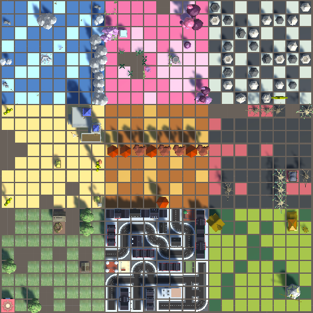

Becoming a games developer is my ideal future job. The problem is that major games studios are declining in Australia except for mobile gaming. Chaos Theory are advertising for a mid-to-senior unity developer to work on a variety of projects they are developing for the mobile games market and some large games on various platforms. This particular job is appealing to me because chaos theory is a well known studio that not only creates mobile games but is also involved in the more complex and interesting areas of VR and AR. Being able to work remotely on a project is also a huge draw for this listing with 12 months guaranteed for remote workers, meaning I won’t have to move to the city.
To be suitable for this job I would need to be proficient in developing on Unity, including experience working on shipped mobile games that were made with Unity. This involves having a deep understanding of C#, game system architecture, Unity UI systems, and Unity animation systems. Experience using GIT version control is also required. A variety of non-technical skills are also needed such as being an effective team member, possessing strong problem solving skills, being a committed, professional employee, and last but not least having a passion for games.
Also included is a list of nice-to-have experiences that cover a wider skill range. Experience with AR/VR titles, shader programming, web development, and the agile process are bonuses that I assume will have to be learnt on the job if you don’t already possess them.
Currently I am a long way from being skilled enough to apply for this job, however I have already started working on the very basics. I have made a simple block maze game in Unity using basic C# where I started learning about game system architecture. The non-technical skills are something that can’t be easily identified, I would however consider past experiences working in teams at university to complete assignments and my current job as a waitress as evidence of strong teamwork, problem solving skills, and professionalism. I also have a solid understanding of the most common project management processes including the agile methodology as I have completed multiple project life cycle classes at university. Finally, and easily my best quality for the job, is my passion for gaming. I’ve been playing games since I was a kid on every platform, including mobile games!
From here I need to continue to develop my skills in Unity and C#, ideally completing a game that can be published on the app store. For now I would like to gain a more broad understanding of IT and complete my Bachelor at RMIT, which will give me a great qualification when applying for jobs.
Becoming an active member of GitHub is something I’m planning to do to gain skills and experience in game development. There is a huge amount of open-source projects to join and having a record of contributions shows commitment. Ultimately I plan to develop a completed mobile app or game using GitHub including all appropriate documentation and planning done in a professional manner to include in my portfolio.